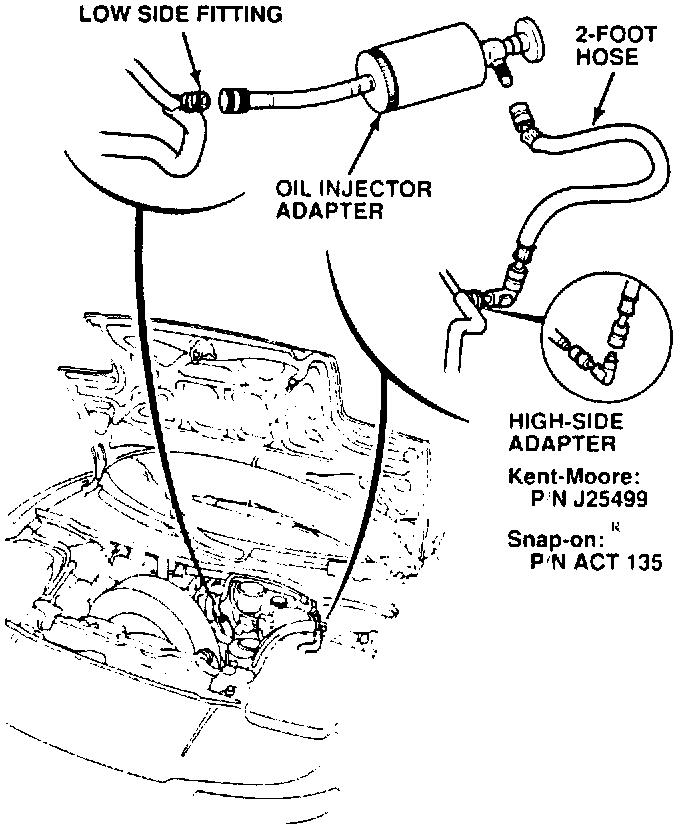

A/C - Increase In Refrigerant Oil Amount
February 19, 1991BULLETIN NO
91-016
YEAR
1991
MODEL
NSX
VIN APPLICATION
thru 001654
Increase in Refrigerant Oil for NSX Air Conditioner
PROBLEM
The amount of refrigerant oil specified for the A/C system has been changed. The new amount is 120 10 cc.
CORRECTIVE ACTION
Add 45 cc (1.5 oz.) of refrigerant oil to the A/C system of applicable cars in dealer stock, and to cars already sold as they come in for maintenance or repair.
1. Put 45 cc (1.5 oz.) of refrigerant oil into a Compressor Oil Injector Adapter (Snap-on(R) tool # ACT111, or equivalent).

2. Attach the adapter to the low-side fitting.
3. Connect a short (2-foot) hose between the adapter and the high-side fitting.
4. Keep the adapter upright so the oil will drain into the system, then start the engine and run it at 1500 rpm for three minutes. (Any more overheat the system).
5. Spray a small amount of red paint on the low-side fitting and cap to indicate that the car has had this service.
Revise page 22-65 (step 6) and page 22-78 (step 11) in your NSX service manual: Cross out "80 cc (2-2/3 fl oz)" and write-in "120 +/- 10 cc (4 fl oz)."
WARRANTY CLAIM INFORMATION
In warranty: The normal warranty applies.
Out-of-warranty: Any repair performed after warranty expiration may be eligible for goodwill consideration by the District Service Manager. You must request consideration, and get the DSM's decision, before starting work.
Operation number: 620040
Flat rate time: 0.4 hour
Failed P/N: 38800-PR7-A01
Defect code: 074
Contention code: B99